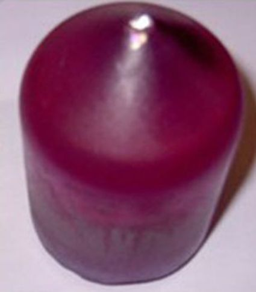
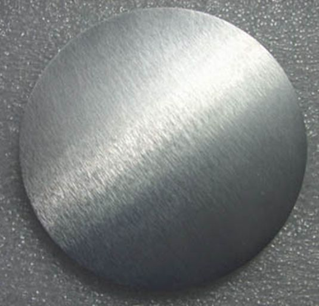
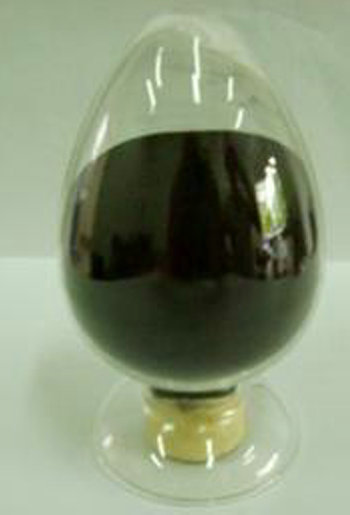
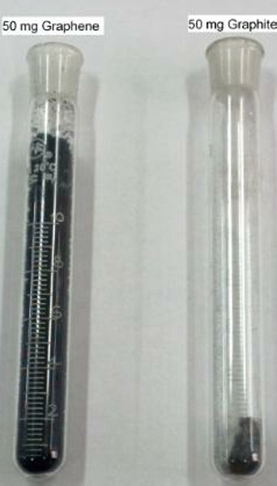
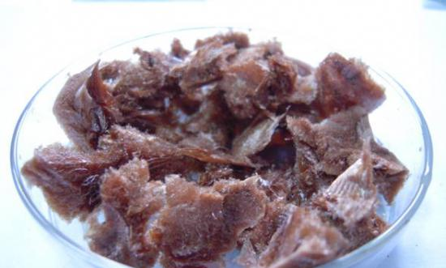
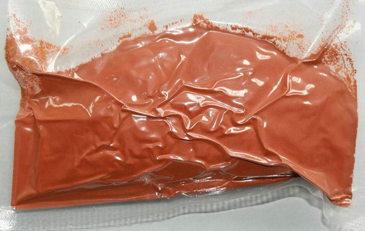

what is Nanotechnology?
nanotechnology is science, engineering, and technology conducted at the nanoscale, which is about 1 to 100 nanometers.
it is the construction and use of functional structures designed from atomic.
nanotechnology is the engineering of functional systems at the molecular scale, molecular scale with at least one characteristic dimension measured in nanometers
nano rare earth (Ce, Er, Eu, La, Lu, Nd, Y)or rare earth oxide targets
Rare Earth primary products are mainly used as raw materials for high-purity individual Rare Earth chemicals, and in the making of petroleum and environment protection catalysts, mischmetal, polishing powders and Rare Earth fertilizers.


Most Rare Earth metals can be processed to different shape and size for evaporation materials, sputtering targets and other specialty applications.
LiTaO3,LiNbO3,KTP, YVO4, YAG,TGG, BBO,LBO, YLF,GdVO4,KGW crystals
we can supply main products and services such as : To engage in the growth and development of various optical & laser crystal ,
offers orienting, cutting and grinding, polishing and other servicesa for variety of crystal materials, optical components and optical glass. We can supply hundreds of substrates with excellent quality, also supply kinds of coating materials and targets,including single crystal,ceramic,metal and alloy targets.


rare earth elements
carbon nanotubes (CNTs), SWNTs, Short CNTs, MWNTs industrial CNTs
carbon nanotubes (CNTs), SWNTs, MWNTs
| CNTs types
| diameter
| length
| purity
| amorphous carbon
| ash
| SSA
|
| SWCNTs
| <2nm
| 5-15 μm
| 95%CNTs (95%SWNTs)
| <=5%
| <=2 wt%
| 350-700m2/g
|
| DWCNTs
| <5nm
| 5-15 μm
| 95%CNTs(60%DWNTs)
| <=5%
| <=2 wt%
| 350-400 m2/g
|
| MWCNTs
| <10nm
| 5-15 μm
| <=95%
| <=5%
| <=0.2 wt %
| 200-220 m2/g
|
| directional CNTs
| 10-20nm
| 5-15 μm
| 7%
| <=3%
| <=0.2 wt %
| 160-200 m2/g
|
| MWCNTs
| 10,20, 30,40, 60,100nm
| 5-15 μm
| =>97%
| <=3%
| <=0.2 wt %
| 90-120 m2/g
|
| Total
| 14 carbon nanotubes (CNTs), SWNTs, Short CNTs, MWNTs industrial CNTs
|
applications of carbon nanotubes
micro-electronics,semiconductors, conducting composites, controlled drug delivery(release), artificial muscles, supercapacitors, batteries, field emission flat panel displays, field effect transistors, single electron transistors, nano lithography, nano electronics, doping, nano balance, nano tweezers, data storage, magnetic nanotube, nanogear, nanotube actuator, molecular quantum wires, hydrogen Storage, noble radioactive gas storage, solar storage, waste recycling, electromagnetic shielding, dialysis filters
, thermal protection, nanotube reinforced composites, reinforcement of armour and other materials, reinforcement of polymer,
avionics, collision-protection materials, fly wheels, etc.
top

{kind=link}
{kind=link}
{kind=link}
{kind=link}
{kind=link}
{kind=link}